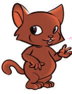

I identify the activities of Tanzanian communities.
Tanzanian communities engage in various activities depending on the nature of their environment. Some of the activities include farming, livestock keeping, fishing and business. These activities contribute to the development of the communities.
Livestock keeping
Livestock keeping is an activity that involves taking care of animals and birds. Some of the animals kept are cows, goats, sheep and rabbits. Birds that are kept are chickens, ducks and guineafowls. Livestock keeping helps people to get food and money. Some of the communities that are involved in livestock keeping activities include Wamasai Wasukuma, Wakurya, Wanyambo, Wanyaturu and Wagogo.